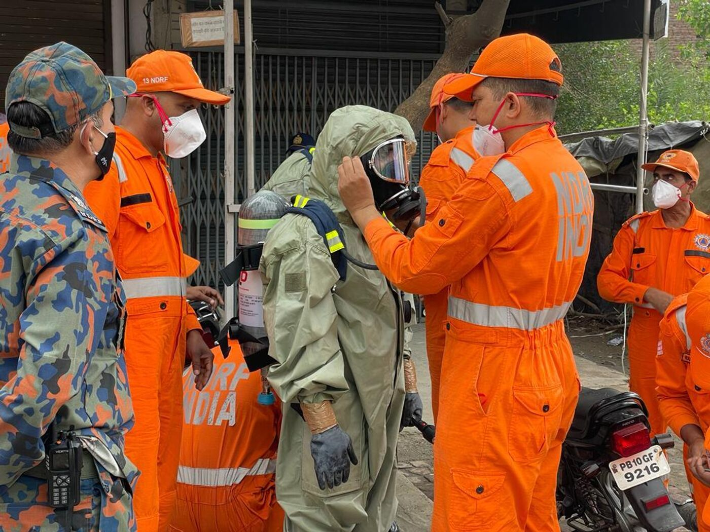
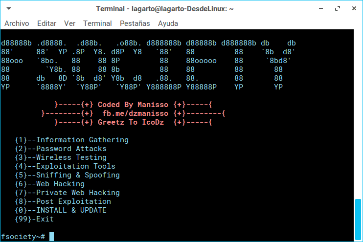
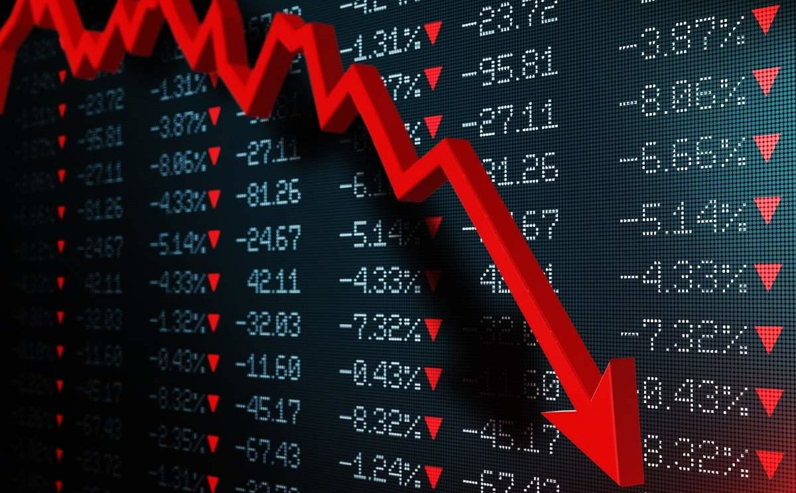
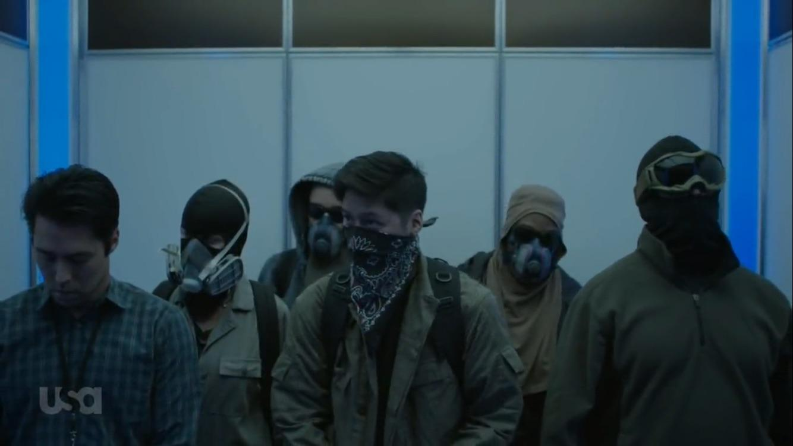

Gotham Times
Toxic Gas Leak - January 15, 1993
In 1993, an alleged gas leak took place in the factories of E-Corp in Washington Township, Bergen County, NJ., resulting in the leakage of chemicals with dangerous levels of toxicity...

Vaughtpost
Rise of Price - October 10, 1995
CEO Lester Moore died in a plane crash in 1995. Phillip Price was appointed as his successor...

Fsociety Hacks - May 9, 2015
In May 2015, fsociety organizes a coordinated attack on E Corp's digital records and the facilities housing the physical backups...

Post 5/9 - June 1, 2015
In the aftermath of the attack, the E-Bank is struggling in the collapsing economy...

September 29 Attacks - September 29, 2015
On September 29, 2015, rioters comprised of Dark Army and fsociety members attack the E-Corp headquarters...
